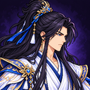
Cultivo0+0/s
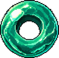
Pedras Espirituais0
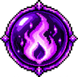
Essência da Alma0
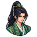
Personagem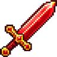
Ofensa0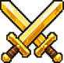
Poder Total0
Resistência0
Atributos
Núcleo de Cultivo
Pontos disponíveis:
0
Vida0
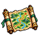
Jornada—Dicas
Núcleos caem dos inimigos a partir do Mapa 3. Toque no + de um cartão do Núcleo de Cultivo para usar: cada ponto dá +1% para sempre.
Velocidade decide quem ataca primeiro em cada turno. Com o dobro da Velocidade do inimigo, você ataca 2 vezes por turno (⚡×2 no combate).
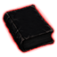
Melhore seus atributos para sempre no Black Book, com a Essência da Alma das conquistas inéditas e do farm.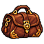
Os equipamentos multiplicam o seu cultivo: +30% de Ataque num item = Ataque do cultivo × 1,3 (somando os itens). Subir de estágio continua valendo +25%.Cultivo
Reino atual
Próximo
Produção
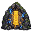
Reclusão
Pílulas de Cultivo
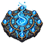
Arranjo de Reunião de Energia
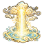
Bênçãos do CaminhoGanhas ao avançar no cultivo
Caminho do Cultivo
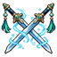
Combate
⚔️ O combate será liberado no 5º estágio do Corpo Temperado.
Em Reclusão — o combate está pausado enquanto você cultiva.
Você
Poder
VS
Poder
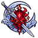
Lutando contra o Mestre do Salão Ying YueRecompensa por vitória
Mochila
🎒 A Mochila será liberada no 5º estágio do Corpo Temperado.
Poder Total0
Itens
Auto:
ⓘ Como funciona a mochila
Toque numa pilha para Equipar, Desmanchar ou Mesclar (3 iguais viram 1 do grau seguinte, até ★5; o tier não muda).
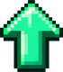
= melhor que o vestido · = fica melhor se melhorar até o nível máximo ·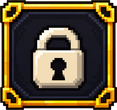
= travado (não é desmanchado nem mesclado).Automático: a cada item que cai, a mochila veste o melhor, mescla as pilhas de 3 iguais e desmancha os obsoletos (os que nem no ★5 e no nível máximo ganhariam do vestido) — cada um tem sua chave lá em cima.
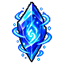
Pedras Espirituais melhoram o nível dos itens vestidos (+5% por nível).Ataque, Vitalidade, Defesa e Velocidade dos itens são % que multiplicam o seu cultivo. Nv. = mapa global onde o item caiu (Nv.97 = Normal, Mapa 1): quanto mais longe, mais forte.
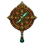
Chances de drop neste mapa
Mapa
🗺️ O Mapa será liberado no 5º estágio do Corpo Temperado.
Recompensa por vitória
Farmar aqui: o herói fica lutando na fase escolhida (o avanço automático é desligado).
Black Book
O Black Book será liberado quando você completar o Corpo Temperado.
Essência da Alma
Essência guardada
0
Ganhe nas conquistas inéditas e no farm. Gaste nas melhorias abaixo.
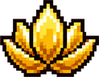
Como ganhar Essência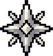
Conquistas inéditas0- Farm na fase atual0
- VIP no farm—
Sua jornada
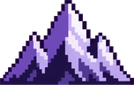
Nada recomeça: cultivo, reino, mapas, itens, Pedras e Black Book seguem com você. Mais longe = mais Essência por segundo de farm.
Melhorias permanentes
Mais longe: · Essência ganha no total: 0
Vidas antigas (legado)
Reencarnações antes da jornada contínua: 0
ⓘ Como funciona
"O que a alma conquistou, o Black Book guarda."
A jornada é contínua: Fácil → Normal → Difícil → Inferno → Infinito, sem voltar ao começo.
A Essência da Alma vem de duas fontes: cada fase vencida pela 1ª vez (uma vez só, para sempre) e o
farm — cada segundo de luta vencida rende Essência do patamar daquela fase (fases mais fáceis rendem
menos; derrota não rende). Preso numa fase difícil? Farme a anterior, a mais difícil que você vence com
folga: ela paga quase o mesmo por segundo. Use a Essência aqui para fortalecer seus atributos para sempre.
Opções
O jogo salva sozinho a cada 10 segundos e ao fechar a página.
Versão
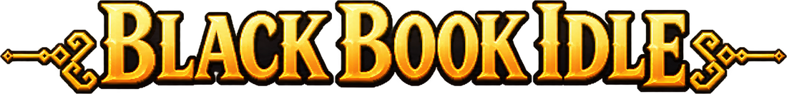
Criação de Personagem
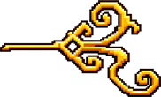
Quem é você,cultivador?
Escolha sua aparência. Seu caminho começa aqui.
Escolha seu
caminho marcial
Cada caminho possui um estilo único e uma habilidade passiva.
O caminho que você trilhava não existe mais. Escolha uma nova classe — seu nome, reino, itens e todo o progresso continuam.
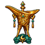
Rank de dano e recompensa
O evento ainda é local: cada jogador enfrenta o seu boss. O rank entre jogadores chega quando o evento ficar online.